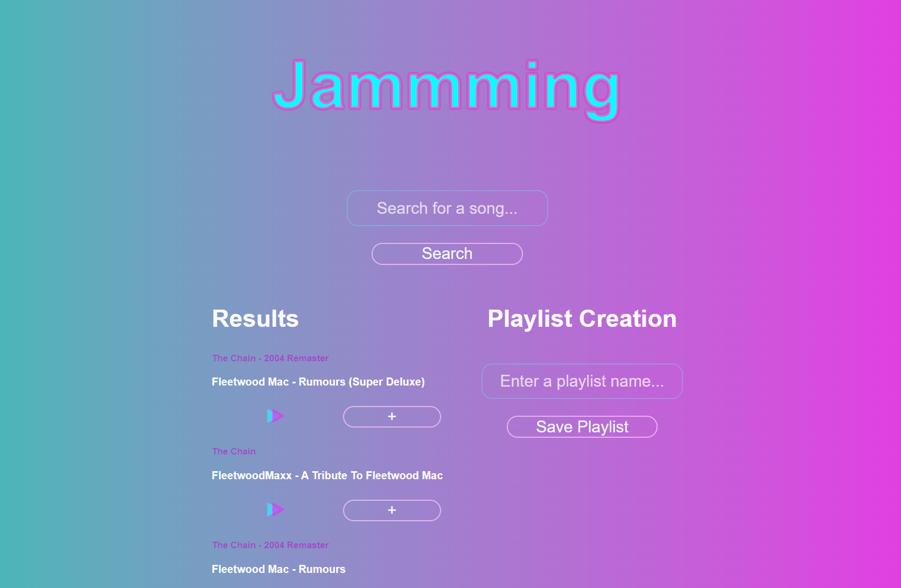
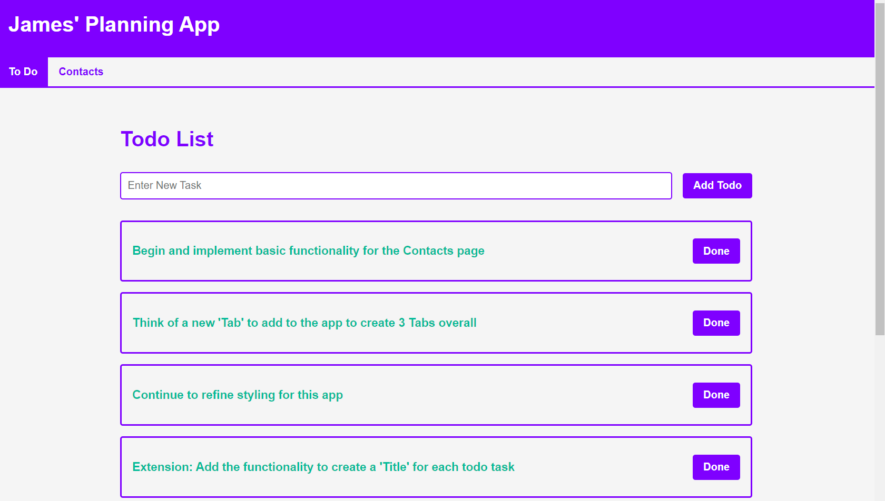

As part of my learning experience with HTML and CSS, I produced a small test blog
documenting my experiences with a new CNC machine I was learning to use at work.
This was my first ever webpage.
It discusses the early stages and steps I took to try to familiarise
myself with the machine and its associated software, with a view of reaching a working
proficiency. The main motivation for the blog was to practice my web development skills
and utilise the techniques I had been learning at the time. You'll be happy to know that
I did eventually reach manufacturing proficiency and I used the machine to produce
plenty of products!
If you are interested in viewing the blog, the link can be found
here.
Moving further into a full-stack dev course I've been following from Codecademy, I
had my first taste of the React.js framework. As part of the learning process, I was
tasked with creating a single page application that utilises the Spotify API to allow
a user to create and save playlists back to their Spotify account.

A further learning point in the project was to deploy the app to the web and for this
purpose Netlify was utlisied. It's a very straightforward and useful application for
publishing React apps, and as such the live app can be found
at this address.
This was quite a challenging task to conquer, being the first React app I had ever developed alone,
and there are still a number of bugs present in the app that I would like to fix. Namely:
- The first attempted search never returns a result
- A number of users don't seem to be able to authenticate with the app
- Some users are unable to play previews of the songs
Any ideas on how to fix these issues would be greatly appreciated and you can send me an email
with your thoughts at the address on the contact page!
Finally, this was also the first time I had experimented with SVGs and basic aninimations
(which you can see at work as the track preview play button in the app) - another interesting
and exciting thing to learn about!
In true "Hello, World" fashion, once I had gone a bit further in my study of React, I decided
to develop a simple "planner" application... in other words a glorified to-do app!
I had covered ReactRouter at this point and so wanted to practice the principles whilst also
making something useful for myself. A simple planning app seemed like a good fit for this set
of requirements and provided a good amount of expansion opportunities.
At this point in time, I have made a fully functional but basic implmentation of the to-do list part of
the
app and I'm working on creating a contact page for storing all my useful connections' details. Since
I have yet to cover any backend content in my learning, I have utilised the
localStorage property of the browser to store the stateful data I need, but
it will be easily possible to implement a backend solution in the future, if I feel so inclined.
// The code in the react component that fetches the "saved" state from localStorage
const [todo, setTodo] = useState(JSON.parse(localStorage.getItem("todo")) || []);

I plan to add a third useful page to the application in due course, but the possibility for
expansion is endless and very approachable, due to the modular nature of React.
I won't be publishing this app to the web, so I have made it more like a desktop app by creating an
executable .bat file that I can run to open it up, which was another short but fun endeavour.